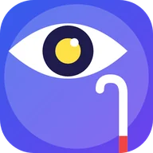

Mirada Amiga
Asistente por voz para personas ciegas o con baja visión: avisa objetos y su distancia, color del semáforo, lee textos y reconoce billetes.
Lo que ve la cámara, contado en voz alta.
Seguridad: Mirada Amiga es una ayuda y puede equivocarse (luz, lluvia, reflejos, objetos tapados o fuera de cuadro). No reemplaza al bastón blanco, al perro guía ni a tu propia precaución. Nunca te dice que cruces la calle ni cuándo moverte: describe lo que la cámara cree ver, y la decisión es siempre tuya. Las distancias y el color del semáforo son aproximados.
Para celulares Android 9 o más nuevos.
Sin publicidad. Nunca.Pagás una vez y la app es tuya: sin banners, sin videos que te hacen esperar, sin interrupciones. Por qué cobramos


Lo que la hace distinta
- 🗣️ Todo por voz, arranca hablando.
- 🔊 Se maneja con los botones de volumen.
- 📴 Detección y lectura en el celular, sin internet.
Qué es
Mirada Amiga es un asistente por voz para personas ciegas o con baja visión. Con la cámara trasera avisa qué objetos tiene adelante, de qué lado y a qué distancia aproximada, con pitidos que se aceleran al acercarse y vibraciones. Dice el color del semáforo peatonal, lee carteles y textos en voz alta, reconoce billetes argentinos y te dice dónde estás. Arranca hablando, se maneja con los botones de volumen, funciona con TalkBack y con «Ok Google, abrí Mirada Amiga». Es una ayuda y puede equivocarse: no reemplaza al bastón blanco ni al perro guía, y la decisión de moverte es siempre tuya.
Qué hace
- Describe por voz objetos delante de la cámara, con lado y distancia aproximada.
- Pitidos que se aceleran al acercarse y vibración.
- Dice el color del semáforo peatonal y avisa sendas peatonales y escalones (aproximado).
- Lee textos en voz alta y reconoce billetes argentinos.
- Dice dónde estás (dirección aproximada).
- Volumen arriba repite, mantener arriba dice hora y batería, volumen abajo pausa.
Requisitos
- Celular Android 9 o más nuevo con cámara trasera
- Motor de voz en español (Google TTS)
- Ubicación sólo para «¿Dónde estoy?»
Funciones
- Objetos con lado y distancia aproximada
- Color del semáforo peatonal
- Lectura de textos (OCR) en el celular
- Billetes argentinos
- ¿Dónde estoy? por voz
- Botones de volumen, mosaico, widget y TalkBack
Cómo se instala
- Descargá el APK e instalalo (si Android pregunta, permití instalar desde el navegador o Archivos).
- Abrila: habla sola y te pide permiso de cámara.
- Opcional: instalá «Mirada Amiga Atajo» para abrirla con el atajo de accesibilidad.
Novedades
- 1.0.2 — Nuevo diseño SumoSoft con intro, selector de colores y tema, manteniendo alto contraste y letra grande.
- 1.0.0 — Primera versión.